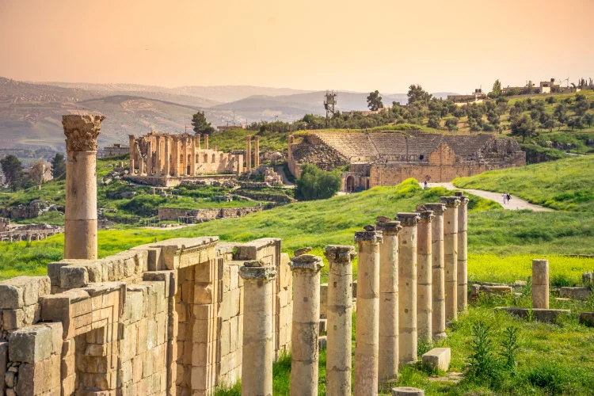
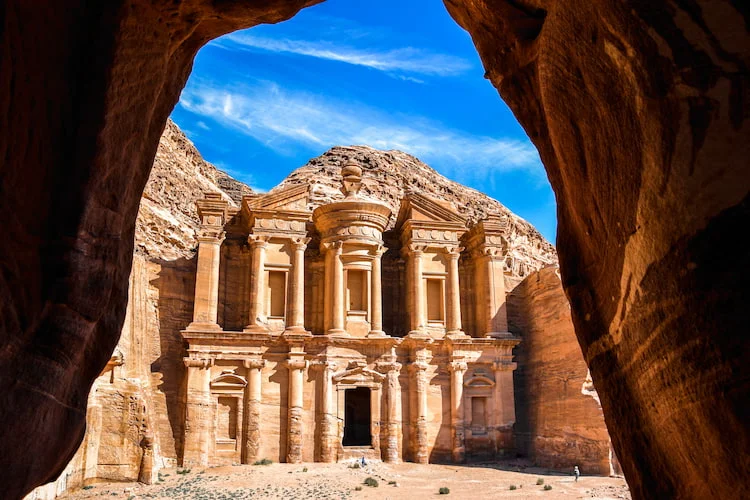
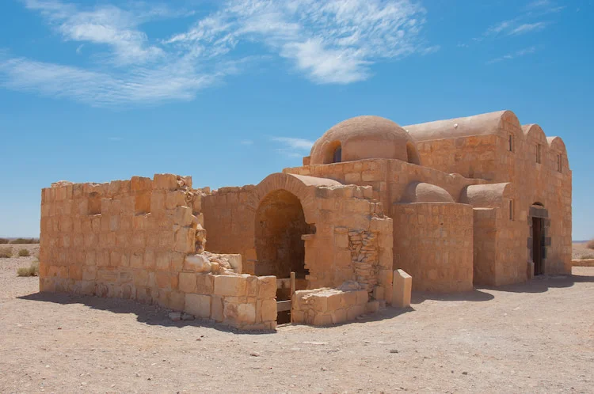
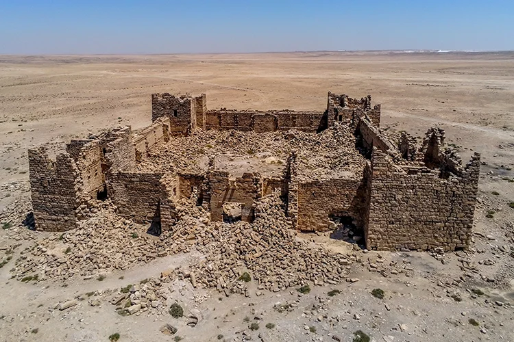
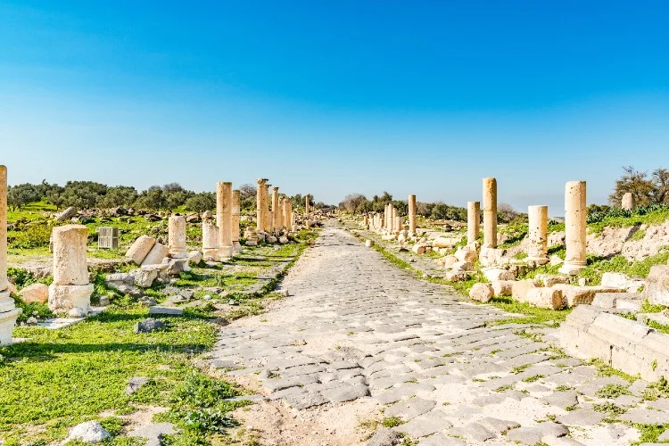

1. Jerash

Jerash is one of the world’s best preserved ancient Roman sites. Once known as Gerasa, Jerash is believed to have been inhabited since the Neolithic Era. However, it is the impressive Roman city built in Jerash which has left its greatest mark on the area, becoming Jordan’s second most popular tourist site after Petra. Tourists flock to see Jerash’s extensive and impressive ruins, including the Temple of Artemis and the Forum with its large ionic columns. Jerash’s original main street, the Cardo, runs through the centre of the site and, with its visible chariot marks and underground drainage system, is fascinating in its own right. Other must-see aspects of Jerash include its still-functioning 3,000 seat South Theatre and its Nymphaeum fountain.
2. Petra

Petra is an iconic ancient site in southern Jordan. A secret to all but the Bedouins until 1812, Petra’s incredible monuments are now considered to be one of the wonders of the world. Petra was established by the once nomadic Kingdom of the Nabataeans. Carving a city out of the sandstone rocks and cliffs, the Nabataeans settled and made Petra into their capital. Visitors to Petra cannot help but be inspired by its incredible remains. Intricate temples and tombs emerge from rocks and cliffs together with later additions from the Roman era and even a Byzantine church resplendent with mosaics. However, it is Petra’s most impressive and well-preserved monument, The Treasury, which is the first site to greet most visitors. Comprised of an elaborate façade hewn into the rock, The Treasury is thought to date back to the first century BC. If the façade looks familiar, this might be because of its prominent appearance in the film ‘Indiana Jones and the Last Crusade’. Sadly, the inside of this monument does not meet the expectations created by its exterior – it is in fact remarkably bare.
3. Qasr Amra

Qasr Amra is an eighth century desert castle in the Jordanian desert. Listed on UNESCO’s World Heritage list, the square-shaped Qasr Amra is mostly gone, but its country house is extremely well preserved, with many of its walls and even ceilings intact. The remains include a reception room and bath house adorned with murals, which have been restored. Mythology, history, and philosophy all play a part in these murals, with depictions of various events and figures, both real and imaginary. With regard to Qasr Amra itself, visitors can see its foundations.
4. Qasr Bashir

Qasr Bashir is an extremely well-preserved Roman fortress that lies in the Jordanian desert. Unlike many Roman remains, Qasr Bashir was never been re-built by later civilisations, meaning that the ruins on the site are original. It is likely that Qasr Bashir was originally home to an auxiliary cavalry unit, charged with defending the Roman frontier and keeping the peace in the surrounding area. For lovers of well-preserved Roman architecture, Qasr Bashir is certainly a hidden gem. Standing within the solid walls of Qasr Bashir, you will certainly be able to feel the living history of life on the edge of the Roman Empire.
5. Umm Qais
